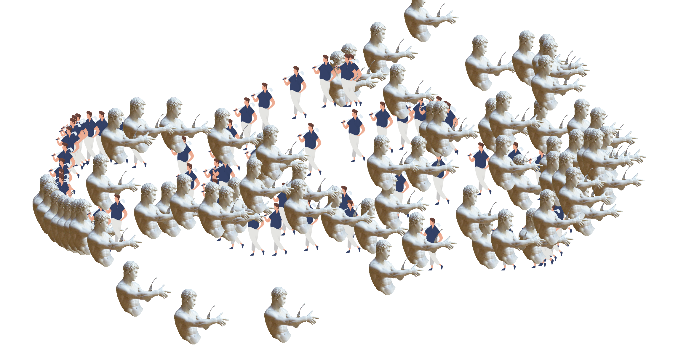
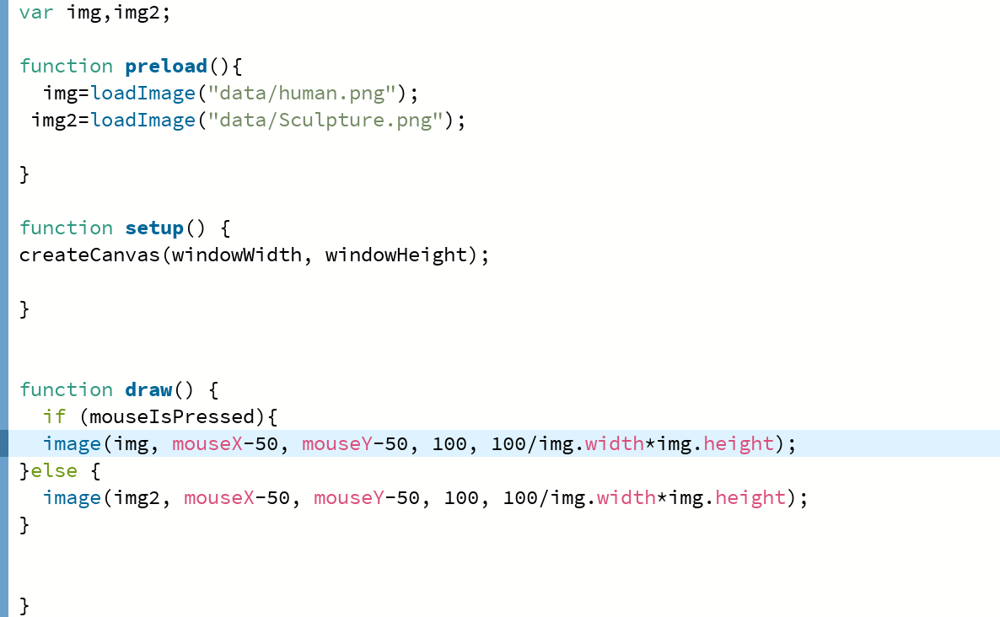
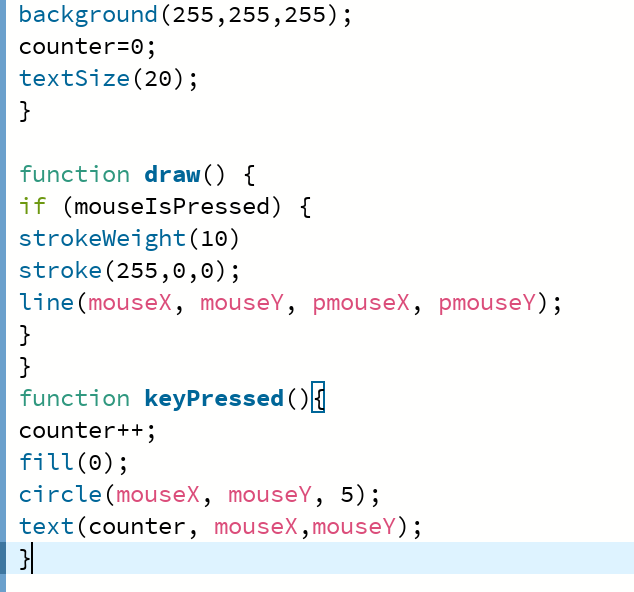
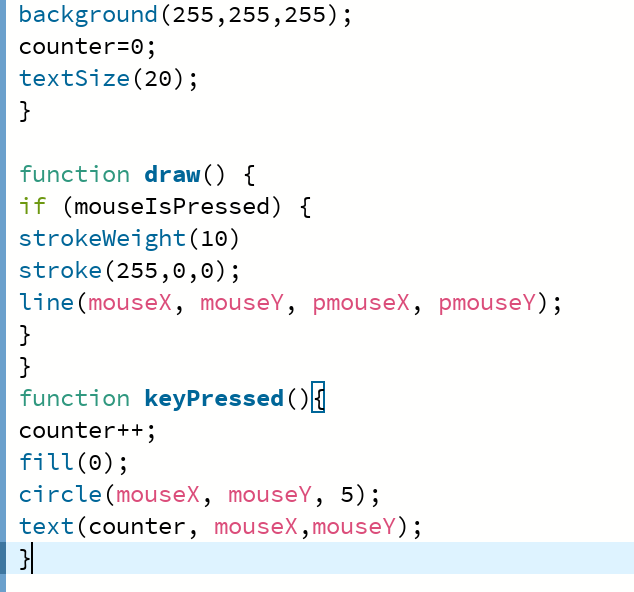

WEEK 5 ACTIVITIES
Cursor Trails
In this week's class we learned how to import images into p5 sketches. First, you need to drag the image into the processing program, and then it will automatically be imported into the data. file, first save the file cur, then use the shortcut key command KOpen the data folder. Then use function preload in p5
 Dot To Dot
This is an activity which will need the user to press any key on the keyboard to place a number, click and drag your mouse to draw.
 
